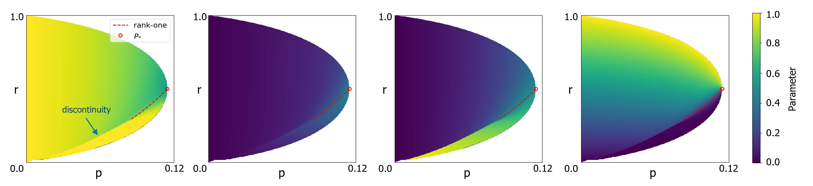

The nonexceptional main theorem and its supporting graphon results are formalized in Lean 4 with Mathlib, sorry-free. External inputs are stated as axioms, and the proofs were produced by Claude models under author direction.
Abstract
Let $H$ be a fixed $d$-regular graph with $d\ge2$, and let $t(H,\cdot)$ denote its homomorphism density. We study the upper-tail event $t(H,G(n,p))\ge r^{|E(H)|}$ for fixed $0<p<r<1$ in a dense Erdős–Rényi random graph $G(n,p)$. Near the Lubetzky–Zhao replica-symmetric phase boundary and away from the exceptional target density $(d-1)/d$, we prove that the optimizer of the Chatterjee–Varadhan variational problem on the symmetry-breaking side is bipodal (two-block) and unique up to relabeling. Its block parameters depend analytically on $(p,r)$. To treat the exceptional boundary point, where the nonexceptional theory degenerates, we construct an analytic curve approaching that point from the symmetry-breaking side along which the unique optimizers are nonconstant rank-one bipodal graphons. In both settings, we derive asymptotic expansions of the edge-density deficit and the rate function that governs the exponential decay of the upper-tail probability. Moreover, the conditioned random graph converges in cut distance to the corresponding bipodal optimizer as $n\to\infty$. As $(p,r)$ approaches the phase boundary from the symmetry-breaking side, the optimizers converge to their constant limits through two distinct mechanisms. For each fixed nonexceptional target density, one block shrinks to zero measure, giving convergence in $L^1$ but not in $L^\infty$. Along the exceptional curve, both blocks remain macroscopic: their sizes tend to $1/2$ and all three block densities tend to $(d-1)/d$, yielding convergence in $L^\infty$.
Problem
The paper studies the upper-tail large-deviation variational problem of Chatterjee and Varadhan for homomorphism densities of a d-regular graph H in a dense Erdős–Rényi graph G(n,p). The goal is to determine the structure of the optimizers near the Lubetzky–Zhao replica-symmetric phase boundary, including at the exceptional density (d-1)/d.
Approach
The authors analyze the convex minorant of the scalar function J_p(x^{1/d}) to characterize the phase boundary. Away from the exceptional density, they reduce the graphon variational problem to a one-variable problem in the edge density and establish quadratic growth of the reduced objective at the boundary. At the exceptional point, they construct an analytic family of rank-one bipodal graphons and prove that these are globally optimal and unique. The nonexceptional theory is machine-checked in Lean 4 with Mathlib, with external inputs assumed as axioms.
Results
Near nonexceptional boundary points, the optimizer is bipodal, unique up to relabeling, and has parameters depending analytically on (p,r); its smaller block vanishes at the boundary. Along an analytic curve approaching the exceptional point, the unique optimizers are rank-one bipodal with both block sizes tending to 1/2. Asymptotic expansions of the edge-density deficit and the rate function are derived in both settings.
Figure 1 : Graphons learned for H=K_{3} by optimizing ( 2 ) using the neural representation [ 23 ] . Each heatmap shows W(x,y) for the indicated parameter pair (p,r) in the symmetry-breaking region; color denotes edge probability. The two-block patterns support an affirmative answer to the bipodality question.

Figure 2 : Numerically optimized bipodal parameters for H=K_{3} in the symmetry-breaking region. Panels (a)–(d) show the higher and lower within-block edge densities, the cross-block density, and the size of the block with higher within-block density. The dashed red curve is the numerical near-rank-one curve approaching P_{*} (red circle), motivating the rank-one bipodal family constructed in Sect